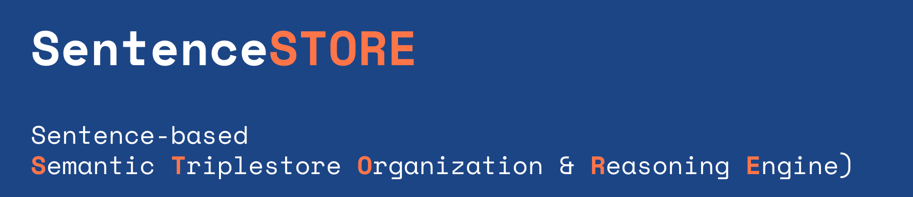
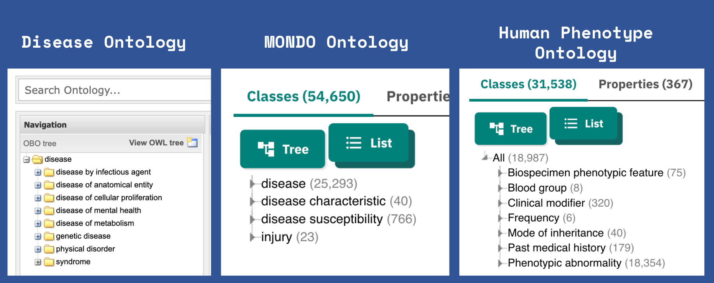
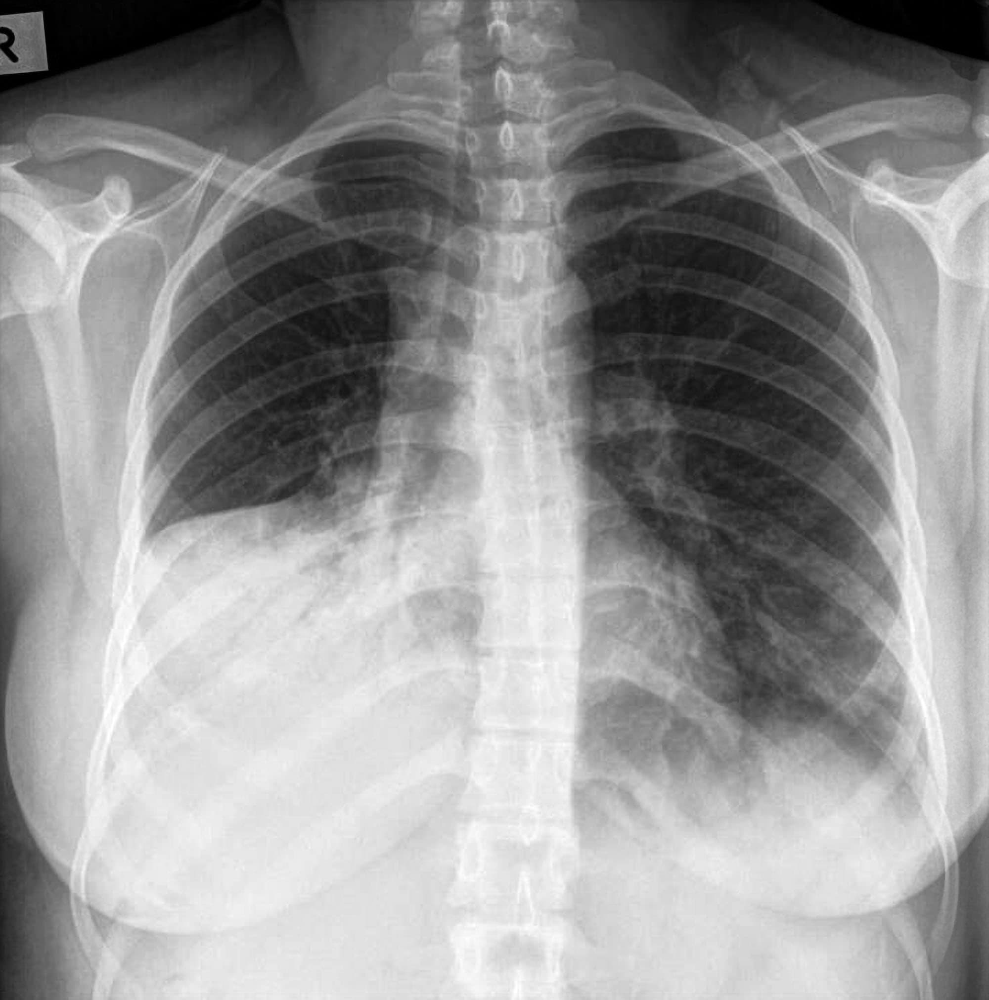
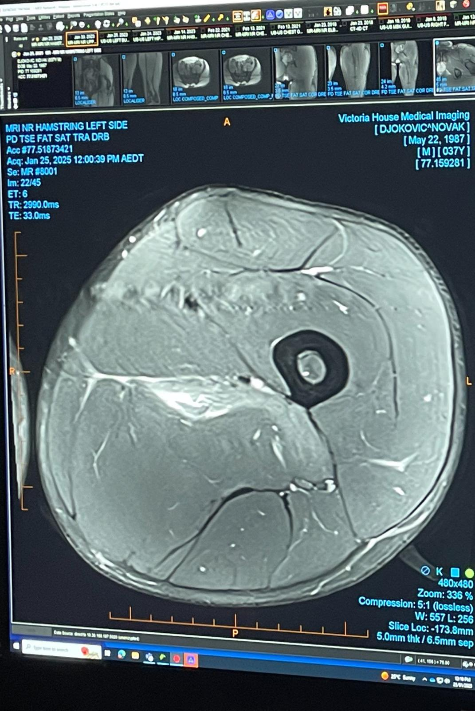

# !pip install owlready2Background
Ontology-Driven Entity Linking in Biomedical / Clinical Text using Plain Language “Triplestore”
Jung Hoon Son, M.D.

SentenceSTORE: “Triplestore” as Plain Language
Semantic Triplestore Organization & Reasoning Engine (STORE)
This is my best attempt at a catchy name that mimics the concept of triplestores used in ontologies into plain language (English), because I realize LLM work at a many-to-many mapping possible, but it understands the rules of language the best.
For those unfamiliar “triple store” is a general description to store “triples” (https://en.wikipedia.org/wiki/Semantic_triple) often used in knowledge representation, particularly used with ontologies and semantic web. If you are unfamiliar with RDF/XML, OWL, Turtle, SPARQL and never wanted to approach them, this might be a solution for you in at least leveraging ontologies.
Consider this an attempt to reimagine the concept of triplestores for the LLM era. While traditional triplestores store knowledge in rigid [subject]-[predicate]-[object] formats, unoriginally named SentenceSTORE uses natural language sentences as its fundamental unit of storage.
Terminology code mapping task has a hallucination problem
It’s well known to the healthcare world that chatbots are terrible for medical coding tasks. Personally, I totally get it, given the tokenization techniques, it’s tough to make sense of these alphanumeric patterns from the standpoint of LLM training.
Example, recent NEJM (New Englang Journal of Medicine) AI article: https://ai.nejm.org/doi/full/10.1056/AIdbp2300040
Gemini Pro 1.5 Base Model: Poor
I’ve tested the Gemini Pro 1.5, and generally it’s in line with the NEJM paper. Medical terminology extraction / medical coding is not a native LLM job.
But overall, ontologies have a lot of accrued, carefully curated knowledge that most people are open-access to.
Ontology Basics
Intro to Owlready2
Let me demonstrate why ontologies are hard to use. Using one of the easier (maybe only) libraries in python that allows us to access data in an ontology, and note that this is very rudimentary exploration of ontologies.
We will be using one of the few native-python libraries for dealing with ontologies to extract the triple stores in the OWL files we will be using, owlready2 - https://owlready2.readthedocs.io/en/latest/
Step 1: Install owlready2
pip install owlready2Step 2: Download OWL files
Step 3: Follow along if you wish to get an intro to ontologies
Querying Ontologies
Finding a concept with name “leukemia”
from owlready2 import get_ontology, get_namespace
onto = get_ontology("ontologies/mondo.owl").load()
onto_hp= get_ontology("ontologies/hp.owl").load()
onto_do= get_ontology("ontologies/doid-merged.owl").load()
obo = get_namespace("http://purl.obolibrary.org/obo/")search_result = onto.search(label="leukemia")
entity = search_result[0]
entityobo.MONDO_0005059Get the label of entity
entity.label['leukemia']Get external terminologies / ontology IDs
- You can get SNOMEDCT, ICD10, UMLS, and various other ontology IDs here.
entity.hasDbXref['DOID:1240',
'EFO:0000565',
'HP:0001909',
'ICD9:207',
'ICD9:207.8',
'ICD9:207.80',
'ICD9:208',
'ICD9:208.8',
'ICD9:208.80',
'ICD9:208.9',
'ICD9:208.90',
'ICDO:9800/3',
'MEDGEN:9725',
'MESH:D007938',
'NANDO:2100002',
'NCIT:C3161',
'SCTID:93143009',
'UMLS:C0023418']Get “parent” concept of an entity
Note duplication - happens with multiple ontologies referencing same entity (HPO and MONDO has some duplications) and Owlready2’s implementation.
Not a big deal for us, since we’ll just use the unique relationships.
[x.label for x in entity.ancestors()][['leukemia'],
[locstr('specifically dependent continuant', 'en')],
['hematopoietic and lymphoid system neoplasm'],
[locstr('continuant', 'en')],
['human disease'],
['neoplastic disease or syndrome'],
[],
[locstr('disposition', 'en')],
['hematologic disorder'],
['cancer or benign tumor'],
[locstr('entity', 'en')],
['disease'],
['neoplasm'],
['hematopoietic and lymphoid cell neoplasm'],
[locstr('realizable entity', 'en')]]Get “child” concept of an entity
[x.label for x in entity.descendants()][0:10][['acute myeloid leukemia, t(3;5)(q25;q34)'],
['acute myeloid leukemia, KIT exon 17 mutation'],
['acute myeloid leukemia, t(1;11)(q21;q23)'],
['mast cell leukemia'],
['atypical chronic myeloid leukemia, BCR-ABL1 negative'],
['acute promyelocytic leukemia'],
['acute myeloid leukemia, del(13q14-q21)'],
['mixed phenotype acute leukemia with t(9;22)(q34.1;q11.2)'],
['acute myeloid leukemia with NPM1 somatic mutations'],
['Philadelphia-positive myelogenous leukemia']]Creating SentenceSTORE
Note that my goal is to recreate the knowledge stored in this ontology, by writing out the concepts above in plain English. I know this is what LLMs understand, so given the generous token length provided, I figured this is possible.
- “Cardiomyopathy is a phenotypic abnormality.”
- “Histiocytoid cardiomyopathy is a cardiomyopathy.”
These functions below basically do this task, grouping concepts for dealing with token length limits.
GOAL: - Take file path of the OWL files and optional predicate string override. - Turn [A]-(descendant)-[B] into “A is a B” - But allow Owlready2’s method names to be replaced with something that LLMs would recognize - My hunch was that “A descendant B” is not as definitive as “A is a B” for the sake of LLMs - it infers grammar / logic pretty well.
# This code itself was iteratively generated via LLM chabot, so bear with the ugliness
def get_dbxref_relationships(entity):
"""
Get direct DbXref relationships for an entity.
Args:
entity: The ontology entity to process
Returns:
list: List of DbXref relationships
"""
relationships = []
entity_label = entity.label[0] if hasattr(entity, 'label') and entity.label else entity.name
# TODO This is ugly but was trial-and-error, someone rewrite it.
# For the time being just wanted to focus on UMLS, SNOMECT, ICD10CM
if hasattr(entity, 'hasDbXref') and entity.hasDbXref:
codes_as_string = ", ".join([
code.replace(":", ' ')
.replace('_2023_03_01', '') # Some SNOMED codes have this suffix
.replace('_CUI', '') # UMLS is prefixed as UMLS_CUI, feel unnecessary
for code in entity.hasDbXref
if code and isinstance(code, str)
and any(code.startswith(prefix) for prefix in ['SNOMEDCT', 'ICD10CM'])
])
if codes_as_string!="":
relationships.append(f"{entity_label.lower()} can be coded with {codes_as_string}")
return relationships
def get_entity_relationships(entity, relationship_map):
"""
Get unique direct relationships for an entity based on defined relationship mappings.
Excludes self-referential relationships.
Args:
entity: The ontology entity to process
relationship_map: Dict mapping method names to relationship phrases
e.g. {"descendants": "is a", "parts": "is part of"}
Returns:
list: List of unique direct relationships
"""
relationships = set()
# Handle different label types including locstr
def get_label(e):
if hasattr(e, 'label') and e.label:
# locstr objects can be used directly as strings
return str(e.label[0])
return e.name
entity_label = get_label(entity)
# Iterate through each relationship type defined in the mapping
for method_name, relationship_phrase in relationship_map.items():
# Get the method if it exists on the entity
relation_method = getattr(entity, method_name, None)
if relation_method and callable(relation_method):
# Get related entities using the method
related_entities = relation_method()
# Handle both iterator and list returns
if not isinstance(related_entities, (list, set)):
related_entities = list(related_entities)
for related in related_entities:
rel_label = get_label(related)
# Skip if the labels are identical (self-reference)
# Don't want "Diabetes is diabetes"
if rel_label != entity_label:
relationships.add(f"{rel_label.lower()} {relationship_phrase} {entity_label.lower()}")
dbxrefs = []
# Get DbXref relationships (for entity and all descendants)
visited = set()
def process_dbxrefs(current_entity):
if current_entity not in visited:
visited.add(current_entity)
dbxrefs.extend(get_dbxref_relationships(current_entity))
for descendant in current_entity.descendants():
process_dbxrefs(descendant)
return dbxrefs
cross_reference_relationships = set(process_dbxrefs(entity))
relationships = relationships.union(cross_reference_relationships)
return list(relationships)Test cross-reference
search_result = onto.search(label="*iabete*")
entity = search_result[0]
entityobo.HP_0000819entity.label['Diabetes mellitus', 'Diabetes mellitus']entity.hasDbXref['SNOMEDCT_US:73211009', 'UMLS:C0011849']Test “Define the relationship!”
Have to make sure the entities get written out as english language sentence.
# Key: method name for owlready2
# Value: what string to use for defining the relationship (DTR)
RELATIONSHIP_MAP = {
"subclasses": "is a",
"parts": "is part of",
"connected_to": "connects to",
"located_in": "is located in"
}
get_entity_relationships(entity, relationship_map=RELATIONSHIP_MAP)['transient neonatal diabetes mellitus can be coded with SNOMEDCT_US 237603002',
'maturity-onset diabetes of the young can be coded with SNOMEDCT_US 609561005',
'maturity-onset diabetes of the young is a diabetes mellitus',
'type ii diabetes mellitus is a diabetes mellitus',
'type i diabetes mellitus is a diabetes mellitus',
'diabetic ketoacidosis is a diabetes mellitus',
'diabetic ketoacidosis can be coded with SNOMEDCT_US 420422005',
'type i diabetes mellitus can be coded with SNOMEDCT_US 46635009',
'type ii diabetes mellitus can be coded with SNOMEDCT_US 44054006',
'diabetes mellitus can be coded with SNOMEDCT_US 73211009',
'insulin-resistant diabetes mellitus is a diabetes mellitus']SentenceSTORE is READY!
Systematically process the ontologies
Since the single entity extracton work, we need to use the processing function to extract the whole thing.
For each ontology there are a handful of “top-level” entities that need to be selected. For example:

Since all ontologies have a hierachical structure, using the top level concept, traversing it down literatively with children concepts, we can cover all the ontology entities.
Ontology (.owl) to SentenceSTORE Converter
def process_ontology_relationships(ontology_path, top_level_labels=None, relationship_map=None):
"""
Process ontology relationships recursively starting from specified top-level entities.
Returns sorted unique relationships across all specified entities and their subclasses.
Args:
ontology_path: str, Path to the ontology file
top_level_labels: list[str], Labels of top-level entries to process.
If None, an empty list will be returned
relationship_map: Optional[dict], Mapping of method names to relationship phrases
Returns:
list: Sorted unique relationships found across specified top-level entities and their subclasses
"""
# Default relationship mapping
DEFAULT_RELATIONSHIP_MAP = {
"subclasses": "is a",
"parts": "is part of",
"connected_to": "connects to",
"located_in": "is located in"
}
from owlready2 import get_ontology, get_namespace
# Load ontology
onto = get_ontology(ontology_path).load()
obo = get_namespace("http://purl.obolibrary.org/obo/")
# Use provided or default relationship map
relationship_map = relationship_map or DEFAULT_RELATIONSHIP_MAP
if not top_level_labels:
return []
print("\nProcessing relationships:")
print("-" * 40)
def process_entity_and_subclasses(entity, processed_entities=None):
"""
Recursively process an entity and all its subclasses.
Args:
entity: The entity to process
processed_entities: Set of already processed entities to avoid cycles
Returns:
list: All relationships found for this entity and its subclasses
"""
if processed_entities is None:
processed_entities = set()
if entity in processed_entities:
return []
processed_entities.add(entity)
# Get relationships for current entity
relationships = get_entity_relationships(entity, relationship_map)
# Process all subclasses
for subclass in entity.descendants():
if subclass not in processed_entities:
sub_relationships = process_entity_and_subclasses(subclass, processed_entities)
relationships.extend(sub_relationships)
return relationships
# Find and process top-level entities
all_relationships = []
processed_entities = set()
for label in top_level_labels:
search_results = onto.search(label=label)
if search_results:
top_entity = search_results[0]
relationships = process_entity_and_subclasses(top_entity, processed_entities)
all_relationships.extend(relationships)
print(f"{label}: {len(relationships)} relationships found")
# Remove duplicates and sort
unique_relationships = sorted(list(set(all_relationships)))
print("-" * 40)
print(f"Total unique relationships: {len(unique_relationships)}\n")
return unique_relationships1. HPO
I iteratively cherry picked these for performance, as Kaggle gives me trouble. Personal notebook works.
relationships_from_hpo = process_ontology_relationships(
ontology_path="ontologies/hp.owl",
top_level_labels=[
# "Biospecimen phenotypic feature",
# "Blood group",
"Clinical modifier",
# "Mode of inheritance",
# "Frequency",
# "Past medical history",
"Phenotypic abnormality"
],
)
Processing relationships:
----------------------------------------
Clinical modifier: 437 relationships found
Phenotypic abnormality: 53772 relationships found
----------------------------------------
Total unique relationships: 26561
2. MONDO
relationships_from_mondo = process_ontology_relationships(
ontology_path="ontologies/mondo.owl",
top_level_labels=[
# "disease",
"human disease",
# "disease characteristic",
# "disease susceptibility", # Has long names
"injury"
],
)
Processing relationships:
----------------------------------------
human disease: 52200 relationships found
injury: 23 relationships found
----------------------------------------
Total unique relationships: 36092
3. Disease Ontology
relationships_from_do = process_ontology_relationships(
ontology_path="ontologies/doid-merged.owl",
top_level_labels=[
"disease by infectious agent",
"disease of anatomical entity",
"disease of cellular proliferation",
# "disease of mental health",
"disease of metabolism",
# "genetic disease",
"physical disorder",
"syndrome"
],
)
Processing relationships:
----------------------------------------
disease by infectious agent: 2179 relationships found
disease of anatomical entity: 41742 relationships found
disease of cellular proliferation: 5738 relationships found
disease of metabolism: 2648 relationships found
physical disorder: 366 relationships found
syndrome: 1944 relationships found
----------------------------------------
Total unique relationships: 18292
[Option Utility]: Polars search function
Just to make string search easier
import polars as pl
from typing import Union, Pattern, List
# All ontology search
# These are just for sanity checking proper processing.
df = pl.from_dict({
"text_relationships": list(set(
relationships_from_hpo +
relationships_from_do +
relationships_from_mondo
))})
hpo_df = pl.from_dict({
"text_relationships": list(set(
relationships_from_hpo
))})
mondo_df = pl.from_dict({
"text_relationships": list(set(
relationships_from_mondo
))})
do_df = pl.from_dict({
"text_relationships": list(set(
relationships_from_do
))})
@pl.api.register_dataframe_namespace("regex")
class RegexFrame:
def __init__(self, df: pl.DataFrame) -> List:
self._df = df
def search(self,
pattern: Union[str, Pattern],
column: str) -> List[str]:
"""Search column using regex pattern. Returns sorted list of matching strings."""
if isinstance(pattern, str):
search_pat = pattern
else:
search_pat = pattern.pattern
return sorted(self._df.filter(
pl.col(column).str.contains(search_pat)
).select(column).to_series().to_list())/var/folders/qk/ln5chcx90n3_vvjpdh0rf_s40000gn/T/ipykernel_84866/174314582.py:28: UserWarning: Overriding existing custom namespace 'regex' (on 'DataFrame')
@pl.api.register_dataframe_namespace("regex")Mapping Checks
✅ SNOMED coded?
df.regex.search(pattern="SNOMEDCT", column='text_relationships')[0:10]['2-3 finger cutaneous syndactyly can be coded with SNOMEDCT_US 205139009',
'2-3 toe cutaneous syndactyly can be coded with SNOMEDCT_US 205145001',
'2-3 toe syndactyly can be coded with SNOMEDCT_US 205145001',
'3-m syndrome can be coded with SNOMEDCT_US 702342007',
'3-methylglutaconic aciduria can be coded with SNOMEDCT_US 237950009',
'4-layered lissencephaly can be coded with SNOMEDCT_US 253147000',
'aagenaes syndrome can be coded with SNOMEDCT_US 28724005',
'abdominal aortic aneurysm can be coded with SNOMEDCT_US 155422008',
'abdominal colic can be coded with SNOMEDCT_US 9991008',
'abdominal distention can be coded with SNOMEDCT_US 41931001, SNOMEDCT_US 60728008']len(df.regex.search(pattern="SNOMEDCT", column='text_relationships'))8028# Not a pure function but good for quick check
def get_ontology_counts(search_term):
print(f'{search_term} in Combined: {(len(df.regex.search(search_term, column="text_relationships")))}')
print("-" * 30)
print(f'{search_term} in HPO: {(len(hpo_df.regex.search(search_term, column="text_relationships")))}')
print(f'{search_term} in MONDO: {(len(mondo_df.regex.search(search_term, column="text_relationships")))}')
print(f'{search_term} in DO: {(len(do_df.regex.search(search_term, column="text_relationships")))}')get_ontology_counts("SNOMED")SNOMED in Combined: 8028
------------------------------
SNOMED in HPO: 3448
SNOMED in MONDO: 0
SNOMED in DO: 4645✅ ICD10 coded?
get_ontology_counts("ICD10")ICD10 in Combined: 4846
------------------------------
ICD10 in HPO: 0
ICD10 in MONDO: 1637
ICD10 in DO: 3365✅ UMLS coded?
get_ontology_counts("UMLS")UMLS in Combined: 0
------------------------------
UMLS in HPO: 0
UMLS in MONDO: 0
UMLS in DO: 0df.regex.search("UMLS", column='text_relationships')[0:5][]✅ Check: “stroke”
df.regex.search("stroke", column="text_relationships")[0:10]['anterior spinal artery stroke is a arterial disorder',
'anterior spinal artery stroke is a spinal cord ischemia',
'autosomal recessive leukoencephalopathy-ischemic stroke-retinitis pigmentosa syndrome is a hereditary disease',
'autosomal recessive leukoencephalopathy-ischemic stroke-retinitis pigmentosa syndrome is a syndromic disease',
'cathepsin a-related arteriopathy-strokes-leukoencephalopathy can be coded with ICD10CM I67.8',
'cathepsin a-related arteriopathy-strokes-leukoencephalopathy is a cerebrovascular disorder',
'cathepsin a-related arteriopathy-strokes-leukoencephalopathy is a hereditary neurological disease',
'ischemic stroke can be coded with SNOMEDCT_US 422504002',
'ischemic stroke is a cerebral infarct',
'ischemic stroke is a cerebral ischemia']✅ Check: “Moyamoya disease”
df.regex.search("moyamoya", column='text_relationships')[10:20]['moyamoya disease is a hereditary neurological disease',
'moyamoya disease with early-onset achalasia is a digestive system disorder',
'moyamoya disease with early-onset achalasia is a moyamoya disease',
'moyamoya phenomenon is a abnormal cerebral artery morphology']Token Number Rough check
Note these are underestimates, since it just counts spaces.
📈 All MONDO + DO + HPO
len((". ".join(list(set(relationships_from_mondo + relationships_from_do + relationships_from_hpo)))).split())697492📈 MONDO
len((". ".join(list(set(relationships_from_mondo)))).split())312260📈 DO
len((". ".join(list(set(relationships_from_do)))).split())153194📈 HPO
len((". ".join(list(set(relationships_from_hpo)))).split())263530df = None
hpo_df = None
mondo_df = None
do_df = None
onto = NoneFinally, Google Gemini Work
⚠️ KAGGLE Seems to have trouble running PROMPTS >500k tokens (?) IT APPEARS
I am resorting to single-ontology mapping.
Generally, the multiple ontology approach prevents code hallucination, but I’ll switch between HPO and Disease Ontology because of the limitations of Kaggle Notebooks.
import os
import google.generativeai as genai
from google.generativeai import caching
from google.generativeai.types import RequestOptions
from google.api_core import retry
from time import sleep
from dotenv import load_dotenv
import json
load_dotenv()
API_KEY = os.environ.get('GEMINI_API_KEY')
genai.configure(api_key=API_KEY)for m in genai.list_models():
print(f"{m.name}: {m.supported_generation_methods}")models/embedding-gecko-001: ['embedText', 'countTextTokens']
models/gemini-1.0-pro-vision-latest: ['generateContent', 'countTokens']
models/gemini-pro-vision: ['generateContent', 'countTokens']
models/gemini-1.5-pro-latest: ['generateContent', 'countTokens']
models/gemini-1.5-pro-001: ['generateContent', 'countTokens', 'createCachedContent']
models/gemini-1.5-pro-002: ['generateContent', 'countTokens', 'createCachedContent']
models/gemini-1.5-pro: ['generateContent', 'countTokens']
models/gemini-1.5-flash-latest: ['generateContent', 'countTokens']
models/gemini-1.5-flash-001: ['generateContent', 'countTokens', 'createCachedContent']
models/gemini-1.5-flash-001-tuning: ['generateContent', 'countTokens', 'createTunedModel']
models/gemini-1.5-flash: ['generateContent', 'countTokens']
models/gemini-1.5-flash-002: ['generateContent', 'countTokens', 'createCachedContent']
models/gemini-1.5-flash-8b: ['createCachedContent', 'generateContent', 'countTokens']
models/gemini-1.5-flash-8b-001: ['createCachedContent', 'generateContent', 'countTokens']
models/gemini-1.5-flash-8b-latest: ['createCachedContent', 'generateContent', 'countTokens']
models/gemini-1.5-flash-8b-exp-0827: ['generateContent', 'countTokens']
models/gemini-1.5-flash-8b-exp-0924: ['generateContent', 'countTokens']
models/gemini-2.5-pro-exp-03-25: ['generateContent', 'countTokens', 'createCachedContent', 'batchGenerateContent']
models/gemini-2.5-pro-preview-03-25: ['generateContent', 'countTokens', 'createCachedContent', 'batchGenerateContent']
models/gemini-2.5-flash-preview-04-17: ['generateContent', 'countTokens', 'createCachedContent', 'batchGenerateContent']
models/gemini-2.5-flash-preview-05-20: ['generateContent', 'countTokens', 'createCachedContent', 'batchGenerateContent']
models/gemini-2.5-flash-preview-04-17-thinking: ['generateContent', 'countTokens', 'createCachedContent', 'batchGenerateContent']
models/gemini-2.5-pro-preview-05-06: ['generateContent', 'countTokens', 'createCachedContent', 'batchGenerateContent']
models/gemini-2.0-flash-exp: ['generateContent', 'countTokens', 'bidiGenerateContent']
models/gemini-2.0-flash: ['generateContent', 'countTokens', 'createCachedContent', 'batchGenerateContent']
models/gemini-2.0-flash-001: ['generateContent', 'countTokens', 'createCachedContent', 'batchGenerateContent']
models/gemini-2.0-flash-exp-image-generation: ['generateContent', 'countTokens', 'bidiGenerateContent']
models/gemini-2.0-flash-lite-001: ['generateContent', 'countTokens', 'createCachedContent', 'batchGenerateContent']
models/gemini-2.0-flash-lite: ['generateContent', 'countTokens', 'createCachedContent', 'batchGenerateContent']
models/gemini-2.0-flash-preview-image-generation: ['generateContent', 'countTokens']
models/gemini-2.0-flash-lite-preview-02-05: ['generateContent', 'countTokens', 'createCachedContent', 'batchGenerateContent']
models/gemini-2.0-flash-lite-preview: ['generateContent', 'countTokens', 'createCachedContent', 'batchGenerateContent']
models/gemini-2.0-pro-exp: ['generateContent', 'countTokens', 'createCachedContent', 'batchGenerateContent']
models/gemini-2.0-pro-exp-02-05: ['generateContent', 'countTokens', 'createCachedContent', 'batchGenerateContent']
models/gemini-exp-1206: ['generateContent', 'countTokens', 'createCachedContent', 'batchGenerateContent']
models/gemini-2.0-flash-thinking-exp-01-21: ['generateContent', 'countTokens', 'createCachedContent', 'batchGenerateContent']
models/gemini-2.0-flash-thinking-exp: ['generateContent', 'countTokens', 'createCachedContent', 'batchGenerateContent']
models/gemini-2.0-flash-thinking-exp-1219: ['generateContent', 'countTokens', 'createCachedContent', 'batchGenerateContent']
models/gemini-2.5-flash-preview-tts: ['countTokens', 'generateContent']
models/gemini-2.5-pro-preview-tts: ['countTokens', 'generateContent']
models/learnlm-2.0-flash-experimental: ['generateContent', 'countTokens']
models/gemma-3-1b-it: ['generateContent', 'countTokens']
models/gemma-3-4b-it: ['generateContent', 'countTokens']
models/gemma-3-12b-it: ['generateContent', 'countTokens']
models/gemma-3-27b-it: ['generateContent', 'countTokens']
models/gemma-3n-e4b-it: ['generateContent', 'countTokens']
models/embedding-001: ['embedContent']
models/text-embedding-004: ['embedContent']
models/gemini-embedding-exp-03-07: ['embedContent', 'countTextTokens']
models/gemini-embedding-exp: ['embedContent', 'countTextTokens']
models/aqa: ['generateAnswer']
models/imagen-3.0-generate-002: ['predict']
models/veo-2.0-generate-001: ['predictLongRunning']
models/gemini-2.5-flash-preview-native-audio-dialog: ['countTokens', 'bidiGenerateContent']
models/gemini-2.5-flash-preview-native-audio-dialog-rai-v3: ['countTokens', 'bidiGenerateContent']
models/gemini-2.5-flash-exp-native-audio-thinking-dialog: ['countTokens', 'bidiGenerateContent']
models/gemini-2.0-flash-live-001: ['bidiGenerateContent', 'countTokens']# If you need to clear the cache completely:
def clear_cache():
for c in caching.CachedContent.list():
c.delete()
clear_cache()for c in caching.CachedContent.list():
print(c)APPLICATION: Structured Consultation Reports
The Prompt
Parse any content clinical information, digest it and encode it with standard terminology codes.
BASE_INSTRUCTIONS = """
Generate structured consultation reports from clinical inputs.
Use these status indicators when appropriate:
NEGATION (use both):
❌ finding + "no/absent/without [term]"
SEVERITY:
🔴 severe/critical
🟡 moderate/concerning
🟢 mild/stable
INPUT CLASSIFICATION:
- Clearly state source type: Patient text or question, clinical text, radiology image, pathology image, or photo of a lesion, etc.
REPORT FORMAT:
### Source
[One line describing input type and key context]
### Impression
[2-3 lines maximum capturing key findings/diagnosis]
### Supporting Evidence
- Primary findings, each with:
- Cached ontology and knowledge base mapping
- Only from cached ontology, find codes from terminologies SNOMEDCT_US, ICD10CM, and/or UMLS when present in the cached ontology: Format as `code`.
- Supporting details from input
- Add Markdown table for identified concepts
STRING | TERMINOLOGY | CODE
### Relevant Relationships
- Key ontological associations:
- Direct phenotype/disease links
- Inheritance patterns if applicable
- System-level relationships
FORMAT RULES:
- Use `backticks` for ontology terms
- **Bold** for key matches/findings
- Group related findings
- Brief, evidence-based statements
- Hyperlink SNOMEDCT_US code as: [REPLACE WITH CODE](https://browser.ihtsdotools.org/?perspective=full&conceptId1=[REPLACE WITH CODE]&edition=MAIN/SNOMEDCT-US/2024-09-01&release=&languages=en)
- Hyperlink UMLS code as: [REPLACE WITH CODE](https://uts.nlm.nih.gov/uts/umls/searchResults?searchString=[REPLACE WITH CODE])
# """
# cache_hpo = caching.CachedContent.create(
# model="models/gemini-1.5-pro-002",
# display_name='Human Phenotype Ontology',
# ttl=60*60,
# system_instruction=f"""You are a clinical consultation system that analyzes inputs and provides structured reports
# using ontology-backed reasoning. Use only cached relationships for interpretations.
# Core Functions:
# - Input classification
# - Key finding identification
# - Ontology-based reasoning
# - Evidence structuring
# {BASE_INSTRUCTIONS}
# """,
# contents=". ".join(
# list(
# set(
# relationships_from_hpo
# )
# )
# )
# )
cache_all = caching.CachedContent.create(
model="models/gemini-2.5-pro-preview-05-06",
display_name='HPO + DO',
ttl=60*60,
system_instruction=f"""You are a clinical consultation system that analyzes inputs and provides structured reports
using ontology-backed reasoning. Use only cached relationships for interpretations.
Core Functions:
- Input classification
- Key finding identification
- Ontology-based reasoning
- Evidence structuring
{BASE_INSTRUCTIONS}
""",
contents=". ".join(
list(
set(
relationships_from_hpo
+ relationships_from_do
)
)
)
)
# cache_do = caching.CachedContent.create(
# model="models/gemini-1.5-pro-002",
# display_name='Disese Ontology',
# ttl=60*60*2,
# system_instruction=f"""You are a clinical consultation system that analyzes inputs and provides structured reports
# using ontology-backed reasoning. Use only cached relationships for interpretations.
# Core Functions:
# - Input classification
# - Key finding identification
# - Ontology-based reasoning
# - Evidence structuring
# {BASE_INSTRUCTIONS}
# """,
# contents=". ".join(
# list(
# set(
# relationships_from_do
# )
# )
# )
# )Markdown Output Displayer
from IPython.display import display, Markdown
def render_markdown(markdown_text):
display(Markdown(markdown_text))🎯 Patient Chief Complaint
user_input = """My belly hurts 10/10 sharp pain."""
model_cached = genai.GenerativeModel.from_cached_content(cached_content=cache_all)
ontology_response = model_cached.generate_content(
f"""Using ONLY the cached ontology relationships, provide a structured analysis report for the following input: {user_input}
""",
request_options={"timeout": 600}
)
render_markdown(f"{ontology_response.text}")Source
Patient text describing current symptoms.
Impression
Patient reports 🔴 severe sharp abdominal pain (10/10).
Supporting Evidence
abdominal pain- Cached ontology and knowledge base mapping:
abdominal painis a type ofpain(derived from “episodic abdominal pain is a episodic pain” in cache, whereepisodic painis a type ofpain).painis aconstitutional symptom. - Supporting details from input: “belly hurts”, severity 10/10 (🔴 severe).
- Associated characteristic:
sharp.- Cached ontology and knowledge base mapping for characteristic:
sharpis apain characteristic. - Supporting details from input: “sharp pain”.
- Cached ontology and knowledge base mapping for characteristic:
- Cached ontology and knowledge base mapping:
| STRING | TERMINOLOGY | CODE |
|---|---|---|
abdominal pain |
||
pain |
||
constitutional symptom |
||
sharp |
||
pain characteristic |
Relevant Relationships
abdominal painis a type ofpain.painis aconstitutional symptom.sharp(as a characteristic of theabdominal pain) is apain characteristic.
🎯 Patient Chatbot Log #1
user_input = """
Hi AI assistant, I've been experiencing heart palpitations and dizziness for about 3 months.
Can you help me understand what this might be?
"""
model_cached = genai.GenerativeModel.from_cached_content(cached_content=cache_all)
ontology_response = model_cached.generate_content(
f"""Using ONLY the cached ontology relationships, provide a structured analysis report for the following input: {user_input}
"""
)
render_markdown(f"{ontology_response.text}")Source
Patient text describing symptoms of palpitations and dizziness over approximately 3 months.
Impression
The patient reports palpitations and dizziness persisting for approximately 3 months. Palpitations are a key symptom that can be associated with cardiac rhythm disturbances (arrhythmia). Dizziness is a non-specific symptom reported by the patient. Further clinical evaluation is typically warranted to determine the underlying cause of these symptoms.
Supporting Evidence
- Primary findings:
- Palpitations
- Cached ontology and knowledge base mapping:
palpitations - Code: SNOMEDCT_US: 80313002
- Supporting details from input: “heart palpitations”, duration “about 3 months”
- Cached ontology and knowledge base mapping:
- Dizziness
- Cached ontology and knowledge base mapping:
dizziness. (Note: No direct cached ontology term or broader category mapping found for “dizziness” in the provided cache. It is listed as a reported symptom.) - Code: N/A
- Supporting details from input: “dizziness”, duration “about 3 months”
- Cached ontology and knowledge base mapping:
- Palpitations
- Identified Concepts Table: | STRING | TERMINOLOGY | CODE | |—————|————-|———-| | palpitations | SNOMEDCT_US | 80313002 | | dizziness | N/A | N/A |
Relevant Relationships
palpitations(SNOMEDCT_US:80313002) is a symptom. In the context of cardiovascular assessment,palpitationsmay prompt investigation for an underlyingarrhythmia.- The cached ontology includes the following system-level relationships for
arrhythmia:arrhythmia(e.g., SNOMEDCT_US:698247007)is aabnormality of cardiovascular system electrophysiology.abnormality of cardiovascular system electrophysiologyis aabnormal cardiovascular system physiology.abnormal cardiovascular system physiologyis acardiovascular system disease.cardiovascular system diseaseis adisease of anatomical entity.
dizzinessis a reported symptom. Its potential underlying causes are broad and require further clinical correlation. No direct ontological relationships fordizzinessare available in the cache.
🎯 Patient Chatbot Log #2
user_input = """I have diabetes and high blood pressure. For the last 3 days I've been short of breath when moving around, need extra pillows to sleep, and my legs are swollen. I gained 4 pounds this week. What could this mean?"""
model_cached = genai.GenerativeModel.from_cached_content(cached_content=cache_all)
ontology_response = model_cached.generate_content(
f"""Using ONLY the cached ontology relationships, provide a structured analysis report for the following input: {user_input}
"""
)
render_markdown(f"{ontology_response.text}")Source
Patient question describing symptoms and medical history.
Impression
The patient reports diabetes mellitus and hypertension, with recent onset (3 days) of dyspnea on exertion, orthopnea, pedal edema, and weight gain. These symptoms are concerning for acute decompensated congestive heart failure.
Supporting Evidence
- Primary findings:
- Diabetes mellitus
- Cached ontology mapping:
diabetes mellitus - SNOMEDCT_US:
267467004 - ICD10CM:
E08-E13 - Supporting details from input: “I have diabetes”
- Cached ontology mapping:
- Hypertension
- Cached ontology mapping:
hypertension - SNOMEDCT_US:
38341003 - Supporting details from input: “and high blood pressure”
- Cached ontology mapping:
- Dyspnea on exertion
- Orthopnea
- Cached ontology mapping:
orthopnea - SNOMEDCT_US:
62744007 - Supporting details from input: “need extra pillows to sleep”
- Cached ontology mapping:
- 🟢 Pedal edema
- Cached ontology mapping:
pedal edema - SNOMEDCT_US:
102572006 - Supporting details from input: “my legs are swollen”
- Cached ontology mapping:
- 🟡 Increased body weight
- Cached ontology mapping:
increased body weight - SNOMEDCT_US:
161831008 - Supporting details from input: “I gained 4 pounds this week”
- Cached ontology mapping:
- Diabetes mellitus
| STRING | TERMINOLOGY | CODE |
|---|---|---|
| diabetes mellitus | SNOMEDCT_US | 267467004 |
| diabetes mellitus | ICD10CM | E08-E13 |
| hypertension | SNOMEDCT_US | 38341003 |
| dyspnea | SNOMEDCT_US | 267036007 |
| orthopnea | SNOMEDCT_US | 62744007 |
| pedal edema | SNOMEDCT_US | 102572006 |
| increased body weight | SNOMEDCT_US | 161831008 |
Relevant Relationships
Diabetes mellitusandhypertensionare significant risk factors forheart disease.Dyspnea,orthopnea,pedal edema, and rapidincreased body weightare common manifestations ofcongestive heart failure.Congestive heart failureis a type ofheart disease.Orthopneais a type ofdyspnea.Edema of the dorsum of feetis apedal edema.Pedal edemais a type ofedema.Edemais anabnormality of fluid regulation.Increased body weightis anabnormality of body weight.
🎯🎯 Example Doctor note
user_input = """
42F presents with new-onset pancytopenia (WBC 2.1, Hgb 8.2, Plt 95) and hepatosplenomegaly, found to have t(9;22) BCR-ABL1+ with 92% blasts on bone marrow biopsy c/w CML in blast crisis.
S/p TAVR for severe AS (mean gradient 52mmHg, AVA 0.8cm²), now with progressive BiV failure (LVEF 25%, elevated JVP to 12cm) and stage III CKD (GFR 42) requiring optimization of GDMT.
"""
model_cached = genai.GenerativeModel.from_cached_content(cached_content=cache_all)
ontology_response = model_cached.generate_content(
f"""Using ONLY the cached ontology relationships, provide a structured analysis report for the following input: {user_input}
{BASE_INSTRUCTIONS}
"""
)
render_markdown(f"{ontology_response.text}")Source
Clinical text describing a 42-year-old female with hematologic and cardiac conditions.
Impression
The patient presents with 🔴 Chronic Myelogenous Leukemia (CML) in blast crisis (BCR-ABL1 positive), manifesting as 🔴 pancytopenia and 🟡 hepatosplenomegaly. Concurrently, she has 🔴 progressive biventricular heart failure (LVEF 25%, elevated JVP) post-TAVR for severe aortic stenosis, and 🟡 Stage III Chronic Kidney Disease.
Supporting Evidence
- Hematology/Oncology Findings:
- 🔴 Chronic Myelogenous Leukemia, BCR-ABL1 positive, blast crisis
- Ontology Mapping:
chronic myelogenous leukemia, bcr-abl1 positive - Codes:
SNOMEDCT_US 154592009 - Supporting Details: t(9;22) BCR-ABL1+, 92% blasts on bone marrow biopsy.
- Ontology Mapping:
- 🔴 Pancytopenia
- Ontology Mapping:
leukopenia,anemia,thrombocytopenia - Codes: Leukopenia:
SNOMEDCT_US 84828003; Thrombocytopenia:SNOMEDCT_US 302215000,SNOMEDCT_US 415116008 - Supporting Details: WBC 2.1, Hgb 8.2, Plt 95.
- Ontology Mapping:
- 🟡 Hepatosplenomegaly
- Ontology Mapping:
hepatosplenomegaly(related tohepatomegalyandsplenomegaly) - Codes: Hepatomegaly:
SNOMEDCT_US 80515008 - Supporting Details: Clinical finding of hepatosplenomegaly.
- Ontology Mapping:
- 🔴 Chronic Myelogenous Leukemia, BCR-ABL1 positive, blast crisis
- Cardiology Findings:
- 🔴 Progressive Biventricular Heart Failure
- Ontology Mapping:
reduced left ventricular ejection fraction,right ventricular failure - Supporting Details: LVEF 25%, elevated JVP to 12cm.
- Ontology Mapping:
- 🔴 Reduced Left Ventricular Ejection Fraction
- Ontology Mapping:
reduced left ventricular ejection fraction - Supporting Details: LVEF 25%.
- Ontology Mapping:
- 🔴 Elevated Jugular Venous Pressure
- Ontology Mapping:
elevated jugular venous pressure - Codes:
SNOMEDCT_US 22447003 - Supporting Details: JVP to 12cm.
- Ontology Mapping:
- 🟡 History of Severe Aortic Stenosis (s/p TAVR)
- Ontology Mapping:
aortic valve stenosis - Codes:
SNOMEDCT_US 60573004 - Supporting Details: Mean gradient 52mmHg, AVA 0.8cm² prior to TAVR.
- Ontology Mapping:
- 🔴 Progressive Biventricular Heart Failure
- Nephrology Findings:
- 🟡 Stage III Chronic Kidney Disease
- Ontology Mapping:
stage 3 chronic kidney disease(which is achronic kidney disease) - Codes: Chronic Kidney Disease:
SNOMEDCT_US 709044004 - Supporting Details: GFR 42.
- Ontology Mapping:
- 🟡 Stage III Chronic Kidney Disease
| STRING | TERMINOLOGY | CODE |
|---|---|---|
| Chronic Myelogenous Leukemia, BCR-ABL1 positive | SNOMEDCT_US | 154592009 |
| Leukopenia | SNOMEDCT_US | 84828003 |
| Thrombocytopenia | SNOMEDCT_US | 302215000 |
| Hepatosplenomegaly | SNOMEDCT_US | 80515008 (for hepatomegaly component) |
| Reduced left ventricular ejection fraction | - | - |
| Right ventricular failure | - | - |
| Elevated jugular venous pressure | SNOMEDCT_US | 22447003 |
| Aortic valve stenosis | SNOMEDCT_US | 60573004 |
| Stage III Chronic Kidney Disease (as Chronic Kidney Disease) | SNOMEDCT_US | 709044004 |
Relevant Relationships
chronic myelogenous leukemia, bcr-abl1 positiveis achronic myeloid leukemia.chronic myeloid leukemiais amyeloid leukemia.myeloid leukemiais aleukemia.- Component findings of pancytopenia:
leukopeniais aleukocyte disease.anemiais ahematopoietic system disease.thrombocytopeniais ablood platelet disease.
hepatosplenomegalyis ahepatomegalyandsplenomegaly.hepatomegalyis avisceromegaly.splenomegalyis anabnormal spleen morphology.
aortic valve stenosisis anaortic valve disease.aortic valve diseaseis aheart valve disease.heart valve diseaseis aheart disease.
reduced left ventricular ejection fractionis aleft ventricular systolic dysfunction.left ventricular systolic dysfunctionis anabnormal left ventricular function.
right ventricular failureis anabnormal right ventricular function.elevated jugular venous pressureis anabnormal jugular venous pressure.stage 3 chronic kidney diseaseis achronic kidney disease.chronic kidney diseaseis akidney failure.
🤯🤯 Image-to-concepts: Dermatology
from IPython.display import Image
IMAGE_FILEPATH = 'data/1730706850076.jpeg'
Image(filename=IMAGE_FILEPATH, width=400)image_model = genai.GenerativeModel(model_name="gemini-2.5-pro-preview-05-06")
sample_file = genai.upload_file(
path='data/1730706850076.jpeg',
display_name="hiking-rash"
)
uploaded_file = genai.get_file(sample_file.name)
# Step 1: Multimodal model to "describe" the image
image_response = image_model.generate_content(
[
uploaded_file,
"""Describe this medical image with precise clinical observations, as if a primary care provider is examining the patient, but with specialty expertise.
REQUIRED OBSERVATIONS:
### Visual Elements
- Imaging modality/view
- Key anatomical structures
- Notable abnormalities
- Quality/technical factors
FORMAT:
- Clear, clinical language
- Anatomical terminology
- Systematic organization
- Avoid interpretation
- Focus on objective findings""",
],
request_options={"timeout": 600},
)
# Step 2: Use the description to annotate
model_cached = genai.GenerativeModel.from_cached_content(cached_content=cache_all)
ontology_response = model_cached.generate_content(
f"""Using ONLY the cached ontology relationships, provide a structured analysis report for the following input: {image_response.text}
{BASE_INSTRUCTIONS}
"""
)
render_markdown(f"{ontology_response.text}")Source
Photo of a lesion, showing a cutaneous eruption on the bilateral posterior lower extremities.
Impression
Bilateral, symmetrical, erythematous maculopapular eruption on the posterior lower legs, extending from mid-calf to ankles, with some reticular features. This presentation is suggestive of an inflammatory skin condition.
Supporting Evidence
- Bilateral Erythematous Eruption on Lower Legs
- Ontology mapping:
Erythema(which is aVascular skin abnormalityand anInflammatory abnormality of the skin) - Codes:
Vascular skin abnormality:[REPLACE WITH CODE](https://browser.ihtsdotools.org/?perspective=full&conceptId1=11263005&edition=MAIN/SNOMEDCT-US/2024-09-01&release=&languages=en)11263005Inflammatory abnormality of the skin:[REPLACE WITH CODE](https://browser.ihtsdotools.org/?perspective=full&conceptId1=703938007&edition=MAIN/SNOMEDCT-US/2024-09-01&release=&languages=en)703938007
- Supporting details: Prominent, erythematous cutaneous eruption present bilaterally on the posterior and posterolateral aspects of the lower legs. Distributed relatively symmetrically from mid-calf region extending inferiorly towards the ankles. The lesions are bright red to pinkish-red.
- Laterality:
Bilateral([REPLACE WITH CODE](https://browser.ihtsdotools.org/?perspective=full&conceptId1=51440002&edition=MAIN/SNOMEDCT-US/2024-09-01&release=&languages=en)51440002) - Localization:
Lower limb(posterior and posterolateral aspects)
- Ontology mapping:
- Lesion Morphology
- Ontology mapping:
Macule(which is aLocalized skin lesion) - Supporting details: The rash consists of multiple, irregularly shaped, erythematous macules and patches. Some areas exhibit a slightly raised, possibly papular, quality. Lesions vary in size, with some smaller discrete macules and other areas where lesions appear to coalesce into larger, more confluent patches. Borders are generally ill-defined and irregular.
- Ontology mapping:
- Reticular Configuration
- Ontology mapping:
Reticular pattern - Supporting details: The arrangement of lesions is somewhat reticular or net-like in some areas, while in others, it is more blotchy and diffuse.
- Ontology mapping:
- Associated Negated Findings
- ❌
Skin vesicleno/absent/without [term]- Supporting details: No vesicles clearly visible.
- ❌
Scaling skinno/absent/without [term] ([REPLACE WITH CODE](https://browser.ihtsdotools.org/?perspective=full&conceptId1=271767006&edition=MAIN/SNOMEDCT-US/2024-09-01&release=&languages=en)271767006)- Supporting details: No scaling clearly visible.
- ❌
Edemano/absent/without [term] (in visible portions of ankles) ([REPLACE WITH CODE](https://browser.ihtsdotools.org/?perspective=full&conceptId1=267038008&edition=MAIN/SNOMEDCT-US/2024-09-01&release=&languages=en)267038008)- Supporting details: No obvious edema noted in the visible portions of the ankles.
- ❌
| STRING | TERMINOLOGY | CODE |
|---|---|---|
| Erythema | SNOMEDCT_US | N/A (Mapped via parent) |
| Macule | SNOMEDCT_US | N/A (Mapped via parent) |
| Reticular pattern | N/A | |
Bilateral |
SNOMEDCT_US | [REPLACE WITH CODE](https://browser.ihtsdotools.org/?perspective=full&conceptId1=51440002&edition=MAIN/SNOMEDCT-US/2024-09-01&release=&languages=en)51440002 |
Vascular skin abnormality |
SNOMEDCT_US | [REPLACE WITH CODE](https://browser.ihtsdotools.org/?perspective=full&conceptId1=11263005&edition=MAIN/SNOMEDCT-US/2024-09-01&release=&languages=en)11263005 |
Inflammatory abnormality of the skin |
SNOMEDCT_US | [REPLACE WITH CODE](https://browser.ihtsdotools.org/?perspective=full&conceptId1=703938007&edition=MAIN/SNOMEDCT-US/2024-09-01&release=&languages=en)703938007 |
Localized skin lesion |
N/A | |
Skin vesicle (negated) |
N/A | |
Scaling skin (negated) |
SNOMEDCT_US | [REPLACE WITH CODE](https://browser.ihtsdotools.org/?perspective=full&conceptId1=271767006&edition=MAIN/SNOMEDCT-US/2024-09-01&release=&languages=en)271767006 |
Edema (negated) |
SNOMEDCT_US | [REPLACE WITH CODE](https://browser.ihtsdotools.org/?perspective=full&conceptId1=267038008&edition=MAIN/SNOMEDCT-US/2024-09-01&release=&languages=en)267038008 |
Relevant Relationships
Erythemais aVascular skin abnormality.Erythemais anInflammatory abnormality of the skin.Inflammatory abnormality of the skinis anIncreased inflammatory response.Maculeis aLocalized skin lesion.- The constellation of findings suggests an underlying
Skin disease([REPLACE WITH CODE](https://browser.ihtsdotools.org/?perspective=full&conceptId1=95320005&edition=MAIN/SNOMEDCT-US/2024-09-01&release=&languages=en)95320005).
render_markdown(image_response.text)Visual Elements
Imaging modality/view: Clinical photograph, posterior view of the lower extremities.
Key anatomical structures: Bilateral lower legs, specifically the calves and ankles, are visible. The distal aspect of the gastrocnemius and soleus muscles, Achilles tendons, and malleolar regions are included. The feet are enclosed in athletic shoes. The superior extent of the visible skin is demarcated by the rolled cuffs of dark trousers.
Notable abnormalities: A prominent, erythematous cutaneous eruption is present bilaterally on the posterior and posterolateral aspects of the lower legs. * Distribution: The rash is distributed relatively symmetrically, affecting both lower legs from approximately the mid-calf region extending inferiorly towards the ankles. The eruption appears to spare the skin covered by the shoes and, presumably, socks. * Morphology: The rash consists of multiple, irregularly shaped, erythematous macules and patches. Some areas exhibit a slightly raised, possibly papular, quality, though this is not definitively clear from the photograph. The lesions vary in size, with some smaller discrete macules and other areas where lesions appear to coalesce into larger, more confluent patches. * Color: The lesions are bright red to pinkish-red. * Borders: The borders of the individual lesions and confluent patches are generally ill-defined and irregular. * Configuration: The arrangement of lesions is somewhat reticular or net-like in some areas, while in others, it is more blotchy and diffuse. No vesicles, bullae, pustules, or scaling are clearly visible. The surrounding, unaffected skin appears normal in color and texture. There is no obvious edema noted in the visible portions of the ankles.
Quality/technical factors: The photograph is well-focused with adequate ambient lighting, allowing for clear visualization of the cutaneous findings. The resolution is sufficient to discern the color and general morphology of the rash. The field of view adequately captures the affected areas.
🤯🤯 Image-to-concepts: Radiology
from IPython.display import Image
IMAGE_FILEPATH = 'data/consolidation-rml.jpg'
Image(filename=IMAGE_FILEPATH, width=400)
image_model = genai.GenerativeModel(model_name="gemini-2.5-pro-preview-05-06")
sample_file = genai.upload_file(
path='data/consolidation-rml.jpg',
display_name="radiology-consolidation")
uploaded_file = genai.get_file(sample_file.name)
# Step 1: Multimodal model to "describe" the image
image_response = image_model.generate_content(
[
uploaded_file,
"""Describe this medical image with precise clinical observations, as if a primary care provider is examining the patient, but with specialty expertise.
REQUIRED OBSERVATIONS:
### Visual Elements
- Imaging modality/view
- Key anatomical structures
- Notable abnormalities
- Quality/technical factors
FORMAT:
- Clear, clinical language
- Anatomical terminology
- Systematic organization
- Avoid interpretation
- Focus on objective findings""",
],
request_options={"timeout": 600},
)
# Step 2: Use the description to annotate
model_cached = genai.GenerativeModel.from_cached_content(cached_content=cache_all)
ontology_response = model_cached.generate_content(
f"""Using ONLY the cached ontology relationships, provide a structured analysis report for the following input: {image_response.text}
{BASE_INSTRUCTIONS}
""",
request_options={"timeout": 600}
)
render_markdown(f"{ontology_response.text}")Source
Radiology image analysis of a frontal chest X-ray.
Impression
🔴 Bilateral pulmonary opacity, highly suggestive of consolidation and more extensive on the right. 🟡 Associated bilateral pleural effusion and cardiomegaly are present. Image quality is limited by suboptimal inspiration.
Supporting Evidence
- 🔴 Bilateral
pulmonary opacity- Cached ontology mapping:
pulmonary opacity(can be caused byparenchymal consolidation;pneumonia(SNOMEDCT_US 195880002 for Viral pneumonia as an example) is alung diseasethat causespulmonary opacity) - Supporting details: Extensive opacity in the right mid and lower lung zones obscuring the right hemidiaphragm and heart border. Opacity in the left lower lung zone obscuring the left hemidiaphragm and partially the left heart border. These findings are consistent with consolidation.
- Cached ontology mapping:
- 🟡 Bilateral
pleural effusion- Cached ontology mapping:
pleural effusion(SNOMEDCT_US 60046008) ->edema - Supporting details: Blunted right costophrenic angle. Left costophrenic angle obscured by opacity.
- Cached ontology mapping:
- 🟡
Cardiomegaly- Cached ontology mapping:
cardiomegaly(SNOMEDCT_US 8186001) ->abnormal heart morphology - Supporting details: Cardiac silhouette appears enlarged, though borders partially obscured.
- Cached ontology mapping:
- Suboptimal inspiration
- Cached ontology mapping: Implies potential for
dyspnea(SNOMEDCT_US 267036007) ->abnormal pattern of respiration - Supporting details: Approximately 7-8 posterior ribs visible above the expected level of the diaphragm.
- Cached ontology mapping: Implies potential for
- ❌ No acute
bone fracture- Cached ontology mapping: ❌
bone fracture(e.g.,pathologic fractureSNOMEDCT_US 22640007) - Supporting details: Visualized osseous structures (ribs, clavicles, scapulae, thoracic spine) show no acute fractures or overt destructive lesions.
- Cached ontology mapping: ❌
- Possible
degenerative disc disease- Cached ontology mapping:
degenerative disc disease(SNOMEDCT_US 156633005) - Supporting details: Degenerative changes may be present in the thoracic spine.
- Cached ontology mapping:
| STRING | TERMINOLOGY | CODE |
|---|---|---|
| Pneumonia | SNOMEDCT_US | 195880002 (example for Viral Pneumonia) |
| Pleural effusion | SNOMEDCT_US | 60046008 |
| Cardiomegaly | SNOMEDCT_US | 8186001 |
| Dyspnea | SNOMEDCT_US | 267036007 |
| Pathologic fracture | SNOMEDCT_US | 22640007 |
| Degenerative disc disease | SNOMEDCT_US | 156633005 |
Relevant Relationships
Pulmonary opacityobserved as consolidation is a key manifestation ofpneumonia.Pneumoniais alung disease.Pleural effusionis a form ofedemaand can be associated withlung disease(such aspneumonia) orheart disease.Cardiomegalyis a type ofabnormal heart morphology, which is aheart disease. The presence of cardiomegaly alongside opacities and effusions may suggest a component of cardiac dysfunction or fluid overload.- Suboptimal inspiration may clinically correlate with
dyspnea, anabnormal pattern of respiration, often linked to underlying cardiopulmonary conditions likepneumoniaorheart disease.
render_markdown(image_response.text)Visual Elements
Imaging Modality/View: Chest X-ray, frontal view (likely posteroanterior - PA).
Key Anatomical Structures: * Lungs: Both lung fields are visualized. * Pleura: Pleural spaces and costophrenic angles. * Mediastinum: Trachea, cardiac silhouette, aortic arch, hilar regions. * Diaphragm: Hemidiaphragms. * Bones: Ribs, clavicles, scapulae, visible portions of the thoracic spine. * Soft Tissues: Chest wall soft tissues, breast shadows.
Notable Abnormalities: * Lungs/Pleura: * Right Lung: Extensive opacity in the right mid and lower lung zones. This opacity obscures the right hemidiaphragm and the right heart border. The superior aspect of this opacity appears somewhat ill-defined. The right costophrenic angle is blunted. * Left Lung: Opacity is present in the left lower lung zone, obscuring the left hemidiaphragm and the left costophrenic angle. This opacity also partially obscures the left heart border. The remainder of the left lung field, particularly the upper and mid zones, appears relatively clear. * Mediastinum: * The cardiac silhouette appears enlarged, though its borders are partially obscured by the adjacent lung opacities, particularly inferiorly on both sides. * The trachea is midline. * Hilar regions are partially obscured by the opacities, but no gross mass or distinct adenopathy is clearly visualized separate from the consolidations. * Diaphragm: * Neither hemidiaphragm is clearly visualized due to overlying opacities.
Bones: * Visualized osseous structures (ribs, clavicles, scapulae, thoracic spine) show no acute fractures or overt destructive lesions. Degenerative changes may be present in the thoracic spine.
Soft Tissues: * Bilateral breast shadows are present. Other overlying soft tissues are unremarkable.
Quality/Technical Factors: * Penetration: Appears adequate; thoracic vertebral bodies are faintly discernible through the cardiac shadow. * Inspiration: Appears suboptimal; approximately 7-8 posterior ribs are visible above the expected level of the diaphragm. * Rotation: The patient is slightly rotated towards the left (spinous processes are closer to the right clavicular head than the left). * Angulation: Appears appropriate for a standard PA projection. * Field of View: Includes lung apices and costophrenic angles (though obscured). * Markers: An “R” marker is present in the upper left corner of the image, indicating the patient’s right side.
from IPython.display import Image
# Image from https://en.wikipedia.org/wiki/Bell%27s_palsy
IMAGE_FILEPATH = 'data/SCR-20241201-cubw.jpeg'
Image(filename=IMAGE_FILEPATH, width=300)image_model = genai.GenerativeModel(model_name="gemini-2.5-pro-preview-05-06")
sample_file = genai.upload_file(
path="data/SCR-20241201-cubw.jpeg",
display_name="Bells Palsy")
uploaded_file = genai.get_file(sample_file.name)
# Step 1: Multimodal model to "describe" the image
image_response = image_model.generate_content(
[
uploaded_file,
"""Describe this medical image with precise clinical observations, as if a primary care provider is examining the patient, but with specialty expertise.
REQUIRED OBSERVATIONS:
### Visual Elements
- Imaging modality/view
- Key anatomical structures
- Notable abnormalities
- Quality/technical factors
FORMAT:
- Clear, clinical language
- Anatomical terminology
- Systematic organization
- Avoid interpretation
- Focus on objective findings""",
],
request_options={"timeout": 600},
)
# Step 2: Use the description to annotate
model_cached = genai.GenerativeModel.from_cached_content(cached_content=cache_all)
ontology_response = model_cached.generate_content(
f"""Using ONLY the cached ontology relationships, provide a structured analysis report for the following input: {image_response.text}
{BASE_INSTRUCTIONS}
""",
request_options={"timeout": 600}
)
render_markdown(f"{ontology_response.text}")Source
Clinical description of a digital photograph of a patient’s face, focusing on facial features and abnormalities.
Impression
Key findings include features consistent with left-sided hemifacial spasm (🟡 moderate/concerning) and bilateral malar rash (🟡 moderate/concerning), more prominent on the right. These suggest a potential neurological condition affecting the facial nerve and a possible dermatological or systemic autoimmune process. Mild frontal balding is also noted.
Supporting Evidence
- Left-sided
hemifacial spasm(🟡 moderate/concerning)- Ontology Mapping:
hemifacial spasm - Codes: SNOMEDCT_US
13753008 - Supporting details from input: “asymmetric facial expression, characterized by a unilateral contraction predominantly on the left side of the lower face,” “left oral commissure is elevated and retracted laterally,” “left nasolabial fold is deepened,” “associated contraction of the left zygomaticus and risorius muscles,” “mentalis muscle appears contracted, causing dimpling of the chin (peau d’orange appearance),” “left eyebrow is slightly elevated compared to the right, suggesting frontalis muscle contraction, more pronounced on the left.” “Transverse forehead rhytides are present.”
- Ontology Mapping:
- Bilateral
malar rash(🟡 moderate/concerning)- Ontology Mapping:
malar rash(Codes map todiscoid lupus rashas per cached ontology) - Codes: SNOMEDCT_US
200938002, SNOMEDCT_US238927000 - Supporting details from input: “Bilateral malar erythema is present, more prominent on the right cheek.” “Right Eye: Mild erythema of the skin of the lower eyelid and infraorbital region extending onto the malar eminence.”
- Ontology Mapping:
- Mild
frontal balding(🟢 mild/stable)
| STRING | TERMINOLOGY | CODE |
|---|---|---|
hemifacial spasm |
SNOMEDCT_US | 13753008 |
facial nerve disease |
N/A | N/A |
malar rash (codes for discoid lupus rash) |
SNOMEDCT_US | 200938002 |
malar rash (codes for discoid lupus rash) |
SNOMEDCT_US | 238927000 |
discoid lupus rash |
SNOMEDCT_US | 200938002 |
discoid lupus rash |
SNOMEDCT_US | 238927000 |
skin rash |
N/A | N/A |
systemic lupus erythematosus (associated condition) |
ICD10CM | M32.9 |
systemic lupus erythematosus (associated condition) |
SNOMEDCT_US | 156450004 |
alopecia of scalp |
SNOMEDCT_US | 278040002 |
alopecia of scalp |
SNOMEDCT_US | 298000004 |
alopecia of scalp |
SNOMEDCT_US | 56317004 |
hair disease |
N/A | N/A |
Relevant Relationships
hemifacial spasmis afacial nerve disease.discoid lupus rash(sharing codes with the observedmalar rash) is askin rash.Malar rashcan be a feature ofsystemic lupus erythematosus.Systemic lupus erythematosusis anautoimmune disease of skin and connective tissue.Autoimmune disease of skin and connective tissueis aconnective tissue disease.alopecia of scalpis ahair disease.
print(image_response.text)### Visual Elements
**Imaging modality/view:**
Digital photograph, close-up anterior view of the face.
**Key anatomical structures:**
The image displays the central and upper facial features, including the forehead, scalp hairline, eyebrows, eyes (sclerae, irides, pupils, eyelids), nose, cheeks, lips, and chin. A portion of a hand is visible at the superior aspect of the head.
**Notable abnormalities:**
* **Facial Expression/Symmetry:**
* The patient exhibits an asymmetric facial expression, characterized by a unilateral contraction predominantly on the left side of the lower face.
* The left oral commissure is elevated and retracted laterally.
* The left nasolabial fold is deepened.
* There is associated contraction of the left zygomaticus and risorius muscles.
* The mentalis muscle appears contracted, causing dimpling of the chin.
* **Forehead:**
* Transverse forehead rhytides are present.
* The left eyebrow is slightly elevated compared to the right, suggesting frontalis muscle contraction, more pronounced on the left.
* **Eyes/Periorbital Region:**
* **Right Eye:** Mild erythema of the skin of the lower eyelid and infraorbital region extending onto the malar eminence. Sclera is white. Pupil is round and centrally located. No obvious ptosis or proptosis.
* **Left Eye:** Sclera is white. Pupil is round and centrally located. No obvious ptosis or proptosis. The skin of the lower eyelid appears normal in color.
* Crow's feet (lateral canthal rhytides) are visible bilaterally, more pronounced with the current facial expression.
* **Nose:**
* Appears structurally normal.
* The skin of the nasal tip and alae appears unremarkable.
* **Cheeks:**
* Bilateral malar erythema is present, more prominent on the right cheek.
* Skin texture appears generally smooth with visible pores.
* **Mouth/Lips:**
* Lips are pink.
* As noted, the left oral commissure is elevated and retracted.
* The vermilion border appears intact.
* Visible portions of the teeth in the upper and lower arches appear to be of normal color and alignment.
* **Chin:**
* Covered by short stubble.
* Evidence of mentalis muscle contraction (peau d'orange appearance).
* **Hair/Scalp:**
* Dark brown hair, with some graying strands visible.
* Frontal hairline appears slightly recessed.
* The hand at the top of the head is retracting the hair posteriorly, exposing the frontal scalp.
* **Hand:**
* Fingers of a hand are visible resting on the scalp. Skin of the hand appears unremarkable. A white cuff of a garment is visible on the wrist/forearm.
**Quality/technical factors:**
* The image is in focus with adequate resolution for observing facial details.
* Lighting is direct, resulting in some specular highlights on the forehead, nose, and cheeks, but generally allows for good visualization of skin color and texture.
* The field of view is well-centered on the face.Djokovic MRI
from IPython.display import Image
IMAGE_FILEPATH = 'data/djokovic_hamstring.jpeg'
Image(filename=IMAGE_FILEPATH, width=300)
image_model = genai.GenerativeModel(model_name="gemini-2.5-pro-preview-05-06")
sample_file = genai.upload_file(
path='data/djokovic_hamstring.jpeg',
display_name="Djokovic MRI")
uploaded_file = genai.get_file(sample_file.name)
# Step 1: Multimodal model to "describe" the image
image_response = image_model.generate_content(
[
uploaded_file,
"""Describe this medical image with precise clinical observations, as if a primary care provider is examining the patient, but with specialty expertise.
REQUIRED OBSERVATIONS:
### Visual Elements
- Imaging modality/view
- Key anatomical structures
- Notable abnormalities
- Quality/technical factors
FORMAT:
- Clear, clinical language
- Anatomical terminology
- Systematic organization
- Avoid interpretation
- Focus on objective findings""",
],
request_options={"timeout": 600},
)
# Step 2: Use the description to annotate
model_cached = genai.GenerativeModel.from_cached_content(cached_content=cache_all)
ontology_response = model_cached.generate_content(
f"""Using ONLY the cached ontology relationships, provide a structured analysis report for the following input: {image_response.text}
{BASE_INSTRUCTIONS}
""",
request_options={"timeout": 600}
)render_markdown(image_response.text)Okay, I will describe the medical image with precise clinical observations, focusing on objective findings.
Clinical Observations:
Visual Elements:
- Imaging Modality/View:
- Magnetic Resonance Imaging (MRI).
- Axial view of the left thigh, as indicated by “MRI NR HAMSTRING LEFT SIDE” and “PD TSE FAT SAT TRA DRB”.
- The sequence is a Proton Density (PD) Turbo Spin Echo (TSE) with fat saturation (FAT SAT).
- Key Anatomical Structures:
- Bone: The femur is centrally located, demonstrating normal cortical low signal and marrow signal.
- Musculature:
- Anterior Compartment (Quadriceps): Vastus lateralis, vastus medialis, vastus intermedius, and rectus femoris are visualized.
- Medial Compartment (Adductors): Adductor magnus, longus, and brevis, as well as gracilis, are identifiable.
- Posterior Compartment (Hamstrings): Biceps femoris (long and short heads), semitendinosus, and semimembranosus are visualized.
- Neurovascular Structures: Neurovascular bundles are present within their respective fascial compartments, though individual vessel/nerve detail is limited at this resolution without contrast.
- Subcutaneous Tissue: Subcutaneous fat is visible circumferentially.
- Fascia: Intermuscular fascial planes are discernible.
- Notable Abnormalities:
- Posterior Compartment Musculature (Hamstrings):
- There is increased signal intensity within the semitendinosus and semimembranosus muscles, particularly noted in the more medial aspect of the posterior compartment. This increased signal is somewhat diffuse and ill-defined.
- There appears to be fluid signal tracking along the intermuscular fascial planes within the posterior compartment, particularly surrounding the semitendinosus and semimembranosus.
- Subcutaneous Tissue:
- Diffuse increased signal intensity is noted within the subcutaneous fat, more pronounced in the posterior and posterolateral aspects of the thigh, suggestive of edema.
- Epimuscular/Perifascial Fluid: Small pockets of increased signal are visible superficial to the muscle fascia in several locations, particularly posteriorly.
- Posterior Compartment Musculature (Hamstrings):
- Quality/Technical Factors:
- Fat Saturation: Appears adequate, with good suppression of fat signal.
- Resolution: Sufficient for evaluation of major muscle groups and soft tissues.
- Artifacts: Minor motion artifact may be present, but does not significantly degrade diagnostic quality.
- Field of View: Appropriate for the region of interest (thigh).
- Patient Demographics/Scan Parameters: Visible in the image header, including patient name [DJOKOVIC^NOVAK], date of birth [May 22, 1987], scan date [Jan 25, 2025], and sequence parameters (TR: 2990.0ms, TE: 33.0ms). The slice thickness is 5.0mm with a 6.5mm separation.
render_markdown(f"{ontology_response.text}")Source
Interpretation of an MRI of the left thigh (Proton Density Turbo Spin Echo with fat saturation, axial view).
Impression
The MRI of the left thigh demonstrates findings consistent with fasciitis and edema within the posterior compartment, involving the semitendinosus and semimembranosus muscles and surrounding subcutaneous tissues. These changes are suggestive of an inflammatory process or soft tissue injury.
Supporting Evidence
Primary Findings:
- Fascial Inflammation and Perifascial Edema
- Ontology Term:
fasciitis - Code: SNOMEDCT_US
36948007 - Supporting details from input: Fluid signal tracking along the intermuscular fascial planes within the posterior compartment, particularly surrounding the semitendinosus and semimembranosus. Small pockets of increased signal (fluid) visible superficial to the muscle fascia in several locations, particularly posteriorly.
- Ontology Term:
- Muscular Edema
- Ontology Term:
edema(localized to muscle) - Code: N/A (General term, no specific code for thigh muscle edema available in cache)
- Supporting details from input: Increased signal intensity within the semitendinosus and semimembranosus muscles, particularly noted in the more medial aspect of the posterior compartment. This increased signal is somewhat diffuse and ill-defined.
- Ontology Term:
- Subcutaneous Edema
- Ontology Terms:
edema(localized to subcutaneous tissue);abnormality of subcutaneous fat tissue - Code: N/A (General terms, no specific code for thigh subcutaneous edema available in cache)
- Supporting details from input: Diffuse increased signal intensity is noted within the subcutaneous fat, more pronounced in the posterior and posterolateral aspects of the thigh.
- Ontology Terms:
- Fascial Inflammation and Perifascial Edema
Identified Concepts Table:
STRING TERMINOLOGY CODE fasciitisSNOMEDCT_US 36948007edemaGeneral Term N/A abnormality of subcutaneous fat tissueGeneral Term N/A
Relevant Relationships
- Ontological Associations:
fasciitis(SNOMEDCT_US 36948007) is an inflammation of the fascia, a type of connective tissue.edemais characterized by an abnormal accumulation of fluid in the interstitial spaces of tissues.abnormality of subcutaneous fat tissuedescribes a deviation from the normal state of the fat layer beneath the skin.
- System-Level Relationships:
- The findings are localized to the musculoskeletal system, specifically affecting the posterior compartment (hamstring muscles: semitendinosus and semimembranosus), associated fascial planes, and overlying subcutaneous tissue of the left thigh.
- The combination of
edemawithin muscles and subcutaneous tissue, along withfasciitis, is indicative of soft tissue injury and/or an inflammatory response in the affected region.
🤯🤯 Image-to-concepts: General Photo
from IPython.display import Image
IMAGE_FILEPATH = 'data/SCR-20241201-crfl-2.jpeg'
Image(filename=IMAGE_FILEPATH, width=300)image_model = genai.GenerativeModel(model_name="gemini-2.5-pro-preview-05-06")
sample_file = genai.upload_file(
path="data/SCR-20241201-crfl-2.jpeg",
display_name="Lebron James")
uploaded_file = genai.get_file(sample_file.name)
# Step 1: Multimodal model to "describe" the image
image_response = image_model.generate_content(
[
uploaded_file,
"""Describe this medical image with precise clinical observations, as if a primary care provider is examining the patient, but with specialty expertise.
REQUIRED OBSERVATIONS:
### Visual Elements
- Imaging modality/view
- Key anatomical structures
- Notable abnormalities
- Quality/technical factors
FORMAT:
- Clear, clinical language
- Anatomical terminology
- Systematic organization
- Avoid interpretation
- Focus on objective findings""",
],
request_options={"timeout": 600},
)
# Step 2: Use the description to annotate
model_cached = genai.GenerativeModel.from_cached_content(cached_content=cache_all)
ontology_response = model_cached.generate_content(
f"""Using ONLY the cached ontology relationships, provide a structured analysis report for the following input: {image_response.text}
{BASE_INSTRUCTIONS}
""",
request_options={"timeout": 600}
)render_markdown(f"{ontology_response.text}")Source
Photograph, anterior-oblique view, of an adult male, focused on the upper body.
Impression
Adult male with photographic evidence of male pattern alopecia (alopecia of scalp). Multiple extensive, well-healed tattoos are present on bilateral upper arms. ❌ No acute skin lesions, ❌ no edema, or ❌ no signs of systemic illness are noted in the visible regions.
Supporting Evidence
- Male pattern alopecia
- Ontology Mapping:
alopecia of scalp(SNOMEDCT_US 278040002, SNOMEDCT_US 298000004, SNOMEDCT_US 56317004) - Supporting details: Frontal and temporal hairline recession observed on the scalp.
- Ontology Mapping:
- Tattoos, well-healed
- Ontology Mapping: Observation of skin feature.
- Supporting details: Multiple extensive, well-healed tattoos are present on both upper arms, covering the deltoid regions and extending distally.
- ❌ No acute signs of inflammation, infection, or keloid formation associated with tattoos
- Ontology Mapping:
inflammatory abnormality of the skin(SNOMEDCT_US 703938007) (negated),keloids(negated) - Supporting details: No acute signs of inflammation, infection, or keloid formation associated with the tattoos are visible.
- Ontology Mapping:
- Well-defined musculature
- Ontology Mapping:
skeletal muscle hypertrophy(general observation) - Supporting details: Athletic build with well-defined musculature, particularly in the deltoid, biceps, and triceps regions.
- Ontology Mapping:
- Absence of other acute visible findings
- ❌ No visible scalp lesions
- Ontology Mapping:
localized skin lesion(negated) - Supporting details: No visible scalp lesions from this view.
- Ontology Mapping:
- ❌ Sclera anicteric
- Ontology Mapping:
jaundice(negated) - Supporting details: Sclera appear anicteric.
- Ontology Mapping:
- ❌ No ptosis
- Ontology Mapping:
ptosis(negated) - Supporting details: No ptosis noted.
- Ontology Mapping:
- ❌ No periorbital edema
- Ontology Mapping:
periorbital edema(SNOMEDCT_US 109245003, SNOMEDCT_US 267041004, SNOMEDCT_US 49563000) (negated) - Supporting details: No periorbital edema noted.
- Ontology Mapping:
- ❌ No thyromegaly
- Ontology Mapping:
goiter(SNOMEDCT_US 3716002) (negated) - Supporting details: No gross thyromegaly visible in the neck region.
- Ontology Mapping:
- ❌ No significant jugular venous distention
- Ontology Mapping:
abnormal jugular venous pressure(SNOMEDCT_US 62436006) (negated) - Supporting details: No significant jugular venous distention visible.
- Ontology Mapping:
- ❌ No gross deformities or joint swelling (hands)
- Ontology Mapping:
abnormal hand morphology(negated),joint swelling(SNOMEDCT_US 271771009) (negated) - Supporting details: Fingers appear normal in morphology, holding a basketball. No gross deformities or joint swelling observed.
- Ontology Mapping:
- ❌ No visible scalp lesions
| STRING | TERMINOLOGY | CODE |
|---|---|---|
| alopecia of scalp | SNOMEDCT_US | 278040002 |
| alopecia of scalp | SNOMEDCT_US | 298000004 |
| alopecia of scalp | SNOMEDCT_US | 56317004 |
| inflammatory abnormality of the skin | SNOMEDCT_US | 703938007 |
| keloids | ||
| skeletal muscle hypertrophy | ||
| localized skin lesion | ||
| jaundice | ||
| ptosis | ||
| periorbital edema | SNOMEDCT_US | 109245003 |
| periorbital edema | SNOMEDCT_US | 267041004 |
| periorbital edema | SNOMEDCT_US | 49563000 |
| goiter | SNOMEDCT_US | 3716002 |
| abnormal jugular venous pressure | SNOMEDCT_US | 62436006 |
| abnormal hand morphology | ||
| joint swelling | SNOMEDCT_US | 271771009 |
Relevant Relationships
alopecia of scalpis_aalopecia.alopeciais_ahypotrichosis.hypotrichosisis_ahair disease.hair diseaseis_aintegumentary system disease.inflammatory abnormality of the skinis_aabnormality of skin physiology.periorbital edemais_aedema.goiteris_athyroid gland disease.abnormal jugular venous pressureis_aabnormality of venous physiology.joint swellingis_aabnormal joint morphology.ptosisis_aeye disease.jaundiceis_acholestasis.keloidsis_aatypical scarring of skin.skeletal muscle hypertrophyis_aabnormality of muscle size.localized skin lesionis_aabnormal skin morphology.
render_markdown(image_response.text)Patient: Adult male, appearing stated age.
Imaging Modality/View: Photograph, anterior-oblique view, focused on the upper body.
Key Anatomical Structures Visible: * Head and Neck: Scalp, forehead, eyes, nose, mouth, chin, neck. * Torso: Upper chest, shoulders. * Upper Extremities: Bilateral upper arms, forearms, hands.
Observations:
- General Appearance: The individual appears alert and oriented. Athletic build with well-defined musculature, particularly in the deltoid, biceps, and triceps regions.
- Head:
- Scalp Hair: Short, dark hair. Evidence of male pattern alopecia with frontal and temporal hairline recession. No visible scalp lesions from this view.
- Facial Hair: Full, dark beard and mustache, well-groomed.
- Skin (Face): Even skin tone. Forehead shows some horizontal rhytids. No gross lesions, rashes, or discolorations noted.
- Eyes: Sclera appear anicteric. Pupils appear round and symmetrical, though reactivity cannot be assessed. No ptosis or periorbital edema noted.
- Nose and Mouth: External nose appears symmetrical. Lips are closed, no visible lesions.
- Neck: No gross masses, thyromegaly, or significant jugular venous distention visible.
- Upper Extremities & Torso (Visible Portions):
- Skin: Skin tone consistent with that of the face. Multiple extensive, well-healed tattoos are present on both upper arms, covering the deltoid regions and extending distally. The tattoos are multi-colored but predominantly dark pigment. No acute signs of inflammation, infection, or keloid formation associated with the tattoos are visible.
- Right Arm: A light-colored compression sleeve is present, covering the elbow and extending onto the proximal forearm.
- Left Arm: A yellow band is present on the left wrist.
- Musculature: As noted, well-developed muscle bulk and definition in the shoulders and arms.
- Hands: Fingers appear normal in morphology, holding a basketball. No gross deformities or joint swelling observed.
Quality/Technical Factors: The photograph is well-lit and in focus, allowing for clear visualization of the described anatomical regions and surface features. Color fidelity appears good. Background is blurred, focusing attention on the subject.
Final Words
As much as the flashy innovation doesn’t exist with this project, I find the robustness to handle almost any input related to clinical AND biomedical text impressive.
Given many are either: - Dismissing LLM-based entity linking as impossible task. - Need a very complex RAG-based, GraphDB based mechanism for fuzzy retrieval.
This route of representing triplestores as plain-English, I believe gives most bang-for-the-performance without having to commit to a tech stack commitment.